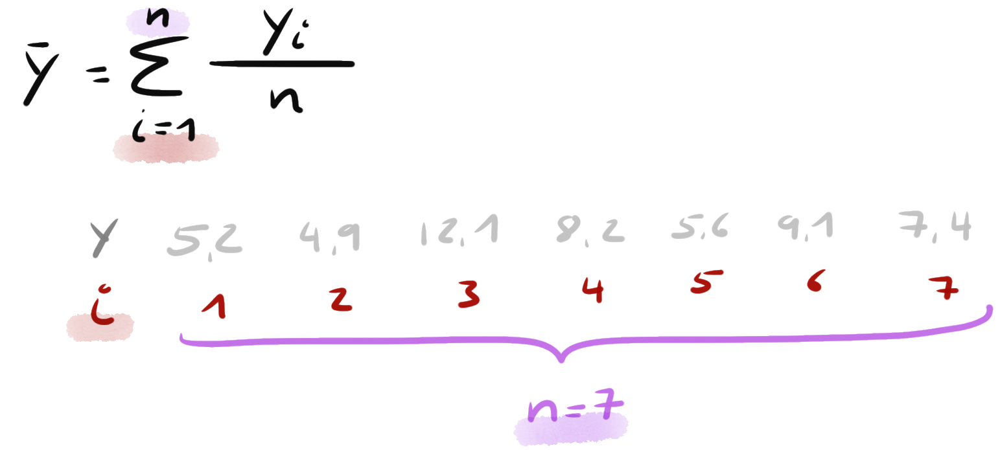
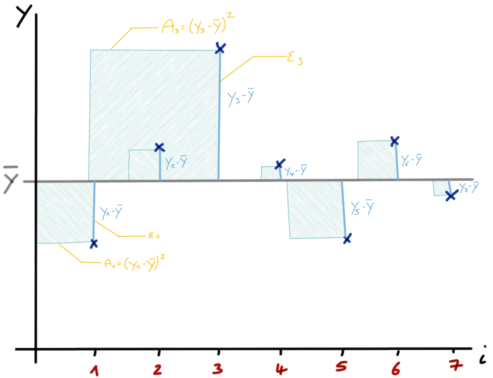

15 Deskriptive Statistik
Version vom Juni 05, 2023 um 11:28:27
“Alles was überhaupt gedacht werden kann, kann klar gedacht werden. Alles was sich aussprechen lässt, lässt sich klar aussprechen.” — Ludwig Wittgenstein, Satz 4.116
Wir nutzen die deskriptive Statistik um Zahlen zusammenzufassen. Das heißt wir haben einen Datensatz vorliegen wie zum Beispiel den Datensatz zu den Sprungweiten der Hundeflöhe. Wir wollen jetzt den Datensatz in wenigen Zahlen wiedergeben. Warum wenige Zahlen? Wenn wir das Ergebnis präsentieren wollen, dann müssen es wenige Zahlen sein, die den Datensatz gut zusammenfassen. Daher ist es wichtig zu wissen, dass wir dutzende bis hunderte Zahlen durch meist eine oder zwei Zahlen beschreiben wollen. Wir brauchen die statistischen Maßzahlen aus diesem Kapitel später um teilweise noch extrem größere Datensätze darstellen zu können. Ebenso werden wir die Maßzahlen aus diesem Kapitel dafür verwenden statistische Tests und Modelle zu rechnen.
Nehmen wir nun als Beispiel die Sprungweiten in [cm] von Hundeflöhen. Wir messen sieben Sprungweiten von sieben Hundeflöhen und messen dabei folgende Werte in [cm]: 5.7, 8.9, 11.8, 8.2, 5.6, 9.1 und 7.6. Wir schreiben diese Sprungweiten nun als \(y\) in einen Vektor in der Form
\[ y = \{5.7, 8.9, 11.8, 8.2, 5.6, 9.1, 7.6\}. \]
c() und den Zuweisungspfeil <-.In R würde der Vektor der Zahlen etwas anders aussehen.
y <- c(5.7, 8.9, 11.8, 8.2, 5.6, 9.1, 7.6) Wir wollen nun die Sprungweiten in \(y\) beschrieben und durch wenige andere Zahlen zusammenfassen. Einige dieser statistischen Maßzahlen sind dir vermutlich schon bekannt, andere eher neu.
Wenn du dir andere Statistikbücher anschaust, dann wird meist die Variable, mit der wir den Mittelwert berechnen, mit \(x\) bezeichnet. Wir machen das hier nicht denn wir haben später für das \(x\) eine andere Verwendung. In einem statistischen Modell schauen wir uns den Zusammenhang von \(y \sim x\) an. Die Sprungweite von Hundeflöhen ist das \(y\) und nicht das \(x\). Glaube mir, es wird nachher leichter zu verstehen.
15.1 Mittelwert
Der Mittelwert einer Zahlenreihe beschreibt den Schwerpunkt der Zahlen. Der Mittelwert wird auch als Lageparameter benannt. Wir schreiben den Mittelwert mit einem Strich über den Vektor, der die Zahlen enthält. Im folgenden ist die Formel für den Mittelwert der Sprungweite in [cm] der Hunde gezeigt. Der Mittelwert ist in dem Sinne eine künstliche Zahl, da der Mittelwert häufig nicht in den beobachteten Zahlen vorkommt.

Wir werden immer mal wieder Formeln vereinfachen. Zum Beispiel nur \(\sum\) schreiben anstatt \(\sum_i^n\), wenn wir einen Vektor aufsummieren und uns die Indizes sparen…
\[ \bar{y} = \sum_{i=1}^{n}\cfrac{x_i}{n} = \cfrac{5.7 + 8.9 + 11.8 + 8.2 + 5.6 + 9.1 + 7.6}{7} = 8.13 \]
Im Durchschnitt oder im Mittel springen Hundeflöhe 8.13 cm weit. In der Abbildung 15.1 wollen wir die Formel nochmal visualisieren. Vielleicht fällt dir dann der Zusammenhang von dem Index \(i\) und der gesamten Fallzahl \(n\) leichter.

In R können wir den Mittelwert einfach mit der Funktion mean() berechnen. Wir wollen dann den Mittelwert noch auf die zweite Kommastelle runden. Das machen wir dann mit der Funktion round().
%>%.Wir erhalten das gleiche Ergebnis wie oben in unserer händischen Rechnung. Die Hundeflöhe springen im Mittel 8.13 cm weit.
Der Mittelwert ist eine bedeutende Maßzahl der Normalverteilung. Daher merken wir uns hier schon mal, dass wir den Mittelwert brauchen werden. Auch wenn wir darüber nachdenken ob sich zwei Gruppen unterscheiden, so nutzen wir hierzu den Mittelwert. Unterscheiden sich die mittleren Sprungweiten in [cm] von Hunde- und Katzenflöhen?
15.2 Spannweite
Die Spannweite erlaubt uns zu überprüfen was die kleinste Zahl und die größte Zahl ist. Also uns das Minimum und das Maximum einer Zahlenreihe anzuschauen. Auf den ersten Blick mag das nicht so sinnig sein, aber wenn wir uns hunderte von Beobachtungen anschauen, wollen wir wissen, ob wir nicht einen Fehler bei Eintragen der Daten gemacht haben. Wir wissen eigentlich, dass z.B keine negativen Zuwachsraten auftreten können.
range().\[ y_{range} = y_{max} - y_{min} = 12.1 - 4.9 = 7.2 \]
Die Hundeflöhe springen in einer Spannweite von 7.2 cm. Das kommt einem normal vor. Die Spannweite ist nicht übertrieben groß. Der minimale Wert ist 4.9 und der maximale Wert ist 12.1 und somit sind beide Zahlen in Ordnung. Keine der beiden Zahlen ist übertrieben groß oder gar negativ.
In R können wir die Spannweite mit range() wie folgt berechnen. Wir erhalten den minimalen und maximalen Wert.
Wir merken uns, dass die Spannweite eine Maßzahl für die Validität der Daten ist. Hat das Experiment geklappt oder kamen da nur komische Zahlen bei raus, die wir so in der Realität nicht erwarten würden. Zum Beispiel negative Sprungweiten, weil wir einmal auf das Minuszeichen auf der Tastatur beim eingeben der Zahlen gekommen sind.
15.3 Varianz
Bis jetzt können wir mit dem Mittelwert \(\bar{y}\) die Lage oder den Mittelpunkt unserer Zahlenreihe beschreiben. Uns fehlt damit aber die Information über die Streuung der Zahlen. Sind die Zahlen alle eher gleich oder sehr verschieden? Liegen die Zahlen daher alle bei dem Mittelwert oder sind die Zahlen weit um den Mittelwert gestreut.
Die Streuung der Zahlen um den Mittelwert beschreibt die Varianz oder auch \(s^2\). Wir berechnen die Varianz indem wir von jeder Zahl den Mittelwert aller Zahlen abziehen und dann das Ergebnis quadrieren. Das machen wir für alle Zahlen und addieren dann die Summe auf. Wir erhalten die Quadratsumme von \(y\).
\[ s^2 = \sum_{i=1}^n\cfrac{(y_i - \bar{y})^2}{n-1} = \cfrac{(5.7 - 8.13)^2 + ... + (7.6 - 8.13)^2}{7-1} = 4.6 \]
Die Varianz beschreibt also die Streuung der Zahlen im Quadrat um den Mittelwert. Das heißt in unserem Beispiel, dass die Sprungweite eine Varianz von 4.6 cm\(^2\) hat. Wir können Quadratzentimeter schlecht interpretieren. Deshalb führen wir gleich die Wurzel der Varianz ein: die Standardabweichung.
In R lässt sich die Varianz einfach durch die Funktion var() berechnen.
Wir benötigen die Varianz häufig nur als Zwischenschritt um die Standardabweichung zu berechnen. Das Konzept der Abweichungsquadrate benötigen wir aber in der Varianzanalyse (ANOVA) und für die Beschreibung einer Normalverteilung.
15.4 Standardabweichung
Die Standardabweichung ist die Wurzel der Varianz. Wo die Varianz die Abweichung der Sprungweite in [cm\(^2\)] beschreibt, beschreibt die Standardabweichung die Streuung der Sprungweite in [cm].
\[ s = \sqrt{s^2} = \sqrt{4.6} = 2.14 \]
Wir können also schreiben, dass die Flöhe im Mittel 8.13 \(\pm\) 2.14cm weit springen. Somit haben wir die Lage und die Streuung der Zahlenreihe \(y\) der Sprungweite in [cm] mit zwei Zahlen beschrieben.
In R können wir die Standardabweichung einfach mit der Funktion sd() berechnen.
15.5 Mittelwert und Varianz - eine Herleitung
Was ist der Mittelwert und die Varianz genau? Schauen wir uns das einmal in Abbildung 15.2 an. Die graue Linie oder Grade beschreibt den Mittelwert der fünf Beobachtungen. Die fünf Beobachtungen sind als blaue Punkt dargestellt. Auf der x-Achse ist nur der Index des Punktes. Das heißt \(y_1\) ist der erste Punkte, das der Index \(i\) gleich 1 ist.

Wenn wir die Summe der Abweichungen von \(y_1\) bis \(y_5\) zu dem Mittelwert bilden, so wird diese Summe 0 sein. Der Mittelwert liegt genau in der Mitte der Punkte. In unserem Beispiel ist der Mittelwert \(\bar{y} = 5.8\). Wir können jetzt die Abstände wie in der folgenden Tabelle 15.1 berechnen.
| Index \(i\) | y | \(\boldsymbol{y_i - \bar{y}}\) | Wert | \(\boldsymbol{\epsilon}\) |
|---|---|---|---|---|
| 1 | 5.7 | \(y_1 - \bar{y}\) | \(5.7 - 8.13 = -2.43\) | \(\epsilon_1\) |
| 2 | 8.9 | \(y_2 - \bar{y}\) | \(8.9 - 8.13 = 0.77\) | \(\epsilon_2\) |
| 3 | 11.8 | \(y_3 - \bar{y}\) | \(11.8 - 8.13 = 3.67\) | \(\epsilon_3\) |
| 4 | 8.2 | \(y_4 - \bar{y}\) | \(8.2 - 8.13 = 0.07\) | \(\epsilon_4\) |
| 5 | 5.6 | \(y_5 - \bar{y}\) | \(5.6 - 8.13 = -2.53\) | \(\epsilon_5\) |
| 6 | 9.1 | \(y_4 - \bar{y}\) | \(9.1 - 8.13 = 0.97\) | \(\epsilon_4\) |
| 7 | 7.6 | \(y_5 - \bar{y}\) | \(7.6 - 8.13 = -0.53\) | \(\epsilon_5\) |
Wir nennen die Abstände \(y_i - \bar{y}\) nach dem griechischen Buchstaben Epsilon \(\epsilon\). Das \(\epsilon\) soll an das \(e\) von Error erinnern. So meint dann Error eben auch Abweichung. Ja, es gibt hier viele Worte für das gleiche Konzept.
Wir berechnen einen Mittelwert von den Epsilons mit \(\bar{\epsilon} = 3.8067887\times 10^{-16}\). Ein Mittelwert nahe Null bzw. von Null wundert uns nicht. Wir haben die Gerade ja so gebaut, das nach oben und unten die gleichen Abstände sind. Die Varianz \(s^2\) der \(y\) ist \(s_y^2 = 4.599\) und die Varianz von \(\epsilon\) ist \(s_{\epsilon}^2 = 4.599\). In beiden Fällen ist die Zahl gleich.
15.6 Standardfehler oder Standard Error (SE)
Wenn wir den Mittelwert der Sprungweiten berichten dann gehört die Standardabweichung der Sprungweiten mit als beschreibendes Maß dazu. Wir berichten keinen Mittelwert ohne Standardabweichung.
Nun ist es aber so, dass der Mittelwert und die Standardabweichung von der Fallzahl abhängen. Je mehr Fallzahl bzw. Beobachtungen wir haben, desto genauer wird der Mittelwert sein. Oder anders ausgedrückt \(\bar{y}\) wird sich \(\mu_y\) annähern. Das gleiche gilt auch für die Standardabweichung \(s_y\), die sich \(\sigma_y\) mit steigender Fallzahl annähert.
Aus diesem Grund brauchen wir noch einen Fehler bzw. eine Maßzahl für die Streuung, die unabhängig von der Fallzahl ist. Wir skalieren also die Standardabweichung mit der Fallzahl indem wir die Standardabweichung durch die Wurzel der Fallzahl teilen.
\[ SE = \cfrac{s}{\sqrt{n}} = \cfrac{2.14}{2.65} = 0.81 \]
Wir müssten ein Paket in R laden um den Standardfehler zu berechnen. Das Laden von zusätzlichen Paketen wollen wir hier aber vermeiden; wir können den Standardfehler auch einfach selber berechnen.
Wir erhalten einen Standardfehler von 0.81. Diese Zahl ist in dem Sinne nicht zu interpretieren, da wir hier nur Experimente losgelöst von deren Fallzahl miteinander vergleichen können. Auf der anderen Seite können wir ohne die berichtete Fallzahl nicht vom Standardfehler auf die Standardabweichung schließen.
Wir benötigen den Standardfehler eigentlich nicht zum Berichten von Ergebnissen. Der Standardfehler ist nicht als Zahl interpretierbar und somit eine reine statistische Größe. Tabelle 15.2 zeigt die Zusammenfassung und den Vergleich von Standardabweichung und Standardfehler.
| Standardabweichung | Standardfehler |
|---|---|
| … ist eine Aussage über die Streuung der erhobenen Werte einer Stichprobe. | … ist eine Aussage über die Genauigkeit des Mittelwertes einer Stichprobe. |
| … hängt von der biologischen Variabilität ab. | … abhängig von der Messgenauigkeit |
| … ist ein beschreibendes Maß. | … ist ein statistisches Maß. |
| … ist nur wenig durch die Größe der Stichprobe beineinflussbar. | … steht im direkten Verhältnis zur Größe der Stichprobe. |
Der Standardfehler oder Standard Error (SE) oder Standard Error of the Mean (SEM) wird uns wieder beim statistischen Testen und dem t-Test begegnen.
\[ T_{calc} = \cfrac{\bar{y_1} - \bar{y_2}}{s_p \cdot \sqrt{\tfrac{2}{n}}} \approx \cfrac{\bar{y_1} - \bar{y_2}}{SEM} \]
Der Nenner beim t-Test kann als Standardfehler gesehen werden. Wir benötigen den Standardfehler also im Kontext des statistischen Testen als eine statistische Maßzahl.
Der Standardfehler ist bedeutend in der Metaanalyse. Also dem gemeinsamen Auswerten von mehreren klinischen Studien. Du kannst im Buch Doing Meta-Analysis with R: A Hands-On Guide mehr darüber erfahren. Wir nutzen keine Metaanalysen in den Grundlagenveranstaltungen.
15.7 Median
Wir wollen uns jetzt noch eine andere Art der Zusammenfassung von Zahlen anschauen. Anstatt mit den Zahlen zu rechnen, sortieren wir jetzt die Zahlen aus dem Vektor \(y = \{5.7, 8.9, 11.8, 8.2, 5.6, 9.1, 7.6\}\) nach dem Rang. Wir rechnen dann mit den Rängen. Die kleinste Zahl kriegt den kleinsten Rang. Wir können R nutzen über due Funktion sort() um den Vektor \(y\) zu sortieren.
y %>% sort()[1] 5.6 5.7 7.6 8.2 8.9 9.1 11.8Der Median \(\tilde{y}\) ist die mittlere Zahl eines Zahlenvektors. Wir haben hier sieben Zahlen, also ist der Median die vierte Zahl. Wir müssen hier aber zwischen einr ungeraden Anzahl und einer geraden Anzahl unterscheiden.
- Ungerade Anzahl von Zahlen, der Median ist die mittlere Zahl des Vektors \(y\): \[ 5.6, 5.7, 7.6, \underbrace{8.2,}_{Median} 8.9, 9.1, 11.8 \]
In R können wir den Median einfach mit der Funktion median()berechnen.
- Gerade Anzahl von Zahlen, der Median ist der Mittelwert der beiden mittleren Zahlen des Vektors \(y\). Ich habe hier einfach die Zahl 13.1 aus dem Hut gezaubert. Es könnte auch eine beliebige andere Zahl sein, die größer als 11.8 ist. Nur damit wir hier eine gerade Anzahl an Zahlen haben: \[ 5.6, 5.7, 7.6, \underbrace{8.2, 8.9,}_{Median = \tfrac{8.2+8.9}{2}=8.55} 9.1, 11.8, \color{blue}{13.1} \].
In R können wir den Median wieder einfach mit der Funktion median()berechnen. Wir müssen nur die Zahl 13.1 zu dem Vektor y mit der Funktion c() hinzufügen.
Der Median ist eine Alternative zu dem Mittelwert. Insbesondere in Fällen, wo es sehr große Zahlen gibt, die den Mittelwert in der Aussage verzerren, kann der Median sinnvoll sein.
Zur Veranschaulichung des Unterschiedes zwischen Median und Mittelwert nehmen wir die Mietpreise in New York. Der mittlere Mietpreis für eine 2-Zimmerwohnung in Manhattan liegt bei 5000$ pro Monat. In den mittleren Mietpreis gehen aber auch die Mieten der Billionaires’ Row mit ein. Der mediane Mietpreis liegt bei 4000$. Die hohen Mieten ziehen den Mittelwert nach rechts.
15.8 Quantile und Quartile
Bei dem Mittelwert beschreibt die Standardabweichung die Streuung der Daten um den Mitelwert. Bei dem Median sind dies die Quartile. Die Quartile beschreiben die Streuung der Daten um den Median. Um die Quartile bestimmen zu können, teilen wir die Daten in 100 Quantile. Du kannst dir Quantile wie Prozente vorstellen. Wir schneiden die Daten also in 100 Scheiben. Das geht natürlich erst wirklich, wenn wir hundert Zahlen haben. Deshalb hilft man sich mit Quartilen - von Quarta, ein Viertel - aus. Tabelle 15.3 zeigt den Zusammenhang.
| Quantile | Quartile | Median |
|---|---|---|
| 25% Quantile | 1\(^{st}\) Quartile | |
| 50% Quantile | 2\(^{nd}\) Quartile | Median |
| 75% Quantile | 3\(^{rd}\) Quartile |
Wir bestimmen die Quartile wie den Median. Wir müssen unterscheiden, ob wir eine ungerade Anzahl an Zahlen oder eine gerade Anzahl an Zahlen vorliegen haben.
Ungerade Anzahl von Zahlen, das 1\(^{st}\) Quartile ist die mittlere Zahl des unteren Mittels und das 3\(^{rd}\) Quartile ist die mittlere Zahl des oberen Mittels des Vektors \(y\): \[ 5.6, \underbrace{5.7,}_{1st\ Quartile} 7.6, 8.2, 8.9, \underbrace{9.1,}_{3rd\ Quartile} 11.8 \]
Gerade Anzahl von Zahlen, das 1\(^{st}\) Quartile ist der Mittelwert der beiden mittleren Zahl des unteren Mittels und das 3\(^{rd}\) Quartile ist der Mittelwert der beiden mittleren Zahlen des oberen Mittels des Vektors \(y\). Ich habe hier einfach die Zahl 13.1 aus dem Hut gezaubert. Es könnte auch eine beliebige andere Zahl sein, die größer als 11.8 ist. Nur damit wir hier eine gerade Anzahl an Zahlen haben: \[ 5.6, \underbrace{5.7, 7.6,}_{1st\ Quartile = \tfrac{5.7+7.6}{2}=6.65} 8.2, 8.9, \underbrace{9.1, 11.8}_{3rd\ Quartile = \tfrac{9.1+11.8}{2}=10.45} \color{blue}{13.1} \]
In R können wir den Median einfach mit der Funktion quantile() berechnen. Wir berechnen hier das 25% Quantile also das 1\(^{st}\) Quartile sowie das 50% Quantile also den Median und das 75% Quantile also das 3\(^{rd}\) Quartile.
25% 50% 75%
6.65 8.20 9.00 25% 50% 75%
7.12 8.55 9.77 Warum unterscheiden sich die händisch berechneten Quartile von den Quartilen aus R? Es gibt verschiedene Arten der Berechnung. In der Klausur nutzen wir die Art und Weise wie die händische Berechnung hier beschrieben ist. Später in der Anwendung nehmen wir die Werte, die R ausgibt. Die Abweichungen sind so marginal, dass wir diese Abweichungen in der praktischen Anwendung ignorieren wollen.
15.9 Interquartilesabstand (IQR)
Der Interquartilesabstand (IQR) beschreibt den Abstand zwischen dem 1\(^{st}\) Quartile und dem 3\(^{rd}\) Quartile. Daher ist der Interquartilesabstand (IQR) ähnlich der Spannweite zwischen dem maximalen und minimalen Wert. Wir benötigen das Interquartilesabstand (IQR) in der explorativen Datenanalyse wenn wir einen Boxplot erstellen wollen.
\[ IQR = 3^{rd}\,\mbox{Quartile} - 1^{st}\,\mbox{Quartile} = 9.1 - 5.7 = 3.4 \]
Wir verwenden das IQR als Zahl eher selten.
Wenn wir einen Zahlenvektor wie durch \(y = \{5.7, 8.9, 11.8, 8.2, 5.6, 9.1, 7.6\}\) beschrieben zusammenfassen wollen, haben wir zwei Möglichkeiten.
- Die parametrische Variante indem wir mit den Zahlen rechnen und deskriptive Maßzahlen wie Mittelwert, Varianz und Standardabweichung berechnen. Diese Maßzahlen kommen aber in den Zahlen nicht vor.
- Die nicht-parametrische Variante indem wir die Zahlen in Ränge umwandeln, also sortieren, und mit den Rängen der Zahlen rechnen. Die deskriptiven Maßzahlen wären dann Median, Quantile und Quartile.
15.10 Zusammenfassen von Daten per Faktor
Gut und soll ich jetzt für jeden Faktorlevel überall den Mittelwert mit mean() berechnen? Geht das nicht einfacher? Ja, geht es. Im folgenden siehst du, wie du den verschiedene deskriptive Maßzahlen in einem Rutsch berechnen kannst.
## Einlesen der Daten aus der Datei flea_dog_cat.xlsx
data_tbl <- read_excel("data/flea_dog_cat.xlsx")
## Berechnen der deskriptiven Statistiken
## getrennt für beide Tierartenn
data_tbl %>%
mutate(animal = as_factor(animal)) %>%
group_by(animal) %>%
reframe(mean = mean(jump_length),
sd = sd(jump_length),
median = median(jump_length),
quantiles = quantile(jump_length,
probs = c(0.25, 0.5, 0.75))) %>%
mutate(across(where(is.numeric), round, 2))# A tibble: 6 x 5
animal mean sd median quantiles
<fct> <dbl> <dbl> <dbl> <dbl>
1 dog 8.13 2.14 8.2 6.65
2 dog 8.13 2.14 8.2 8.2
3 dog 8.13 2.14 8.2 9
4 cat 4.74 1.9 4.3 3.65
5 cat 4.74 1.9 4.3 4.3
6 cat 4.74 1.9 4.3 5.75